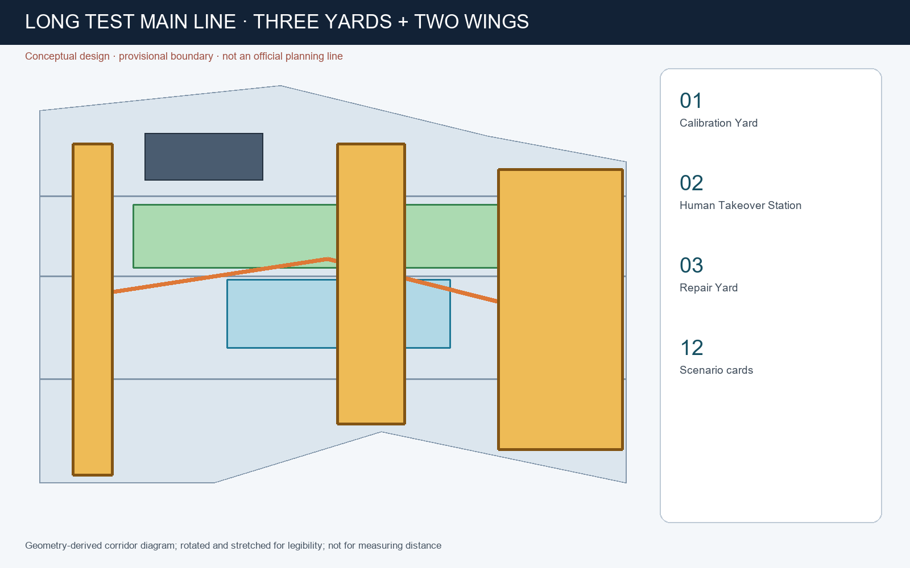
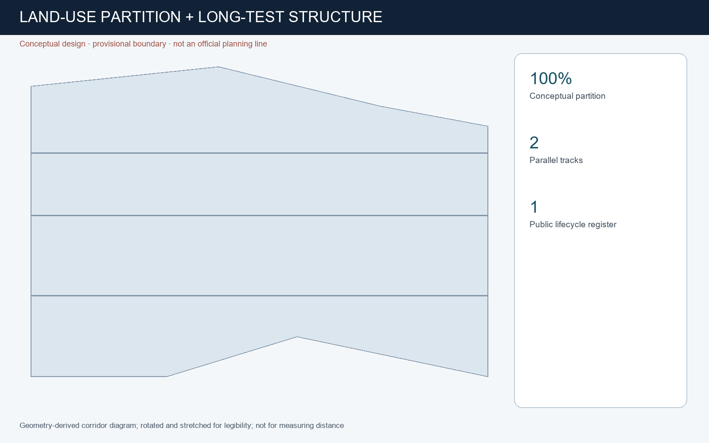
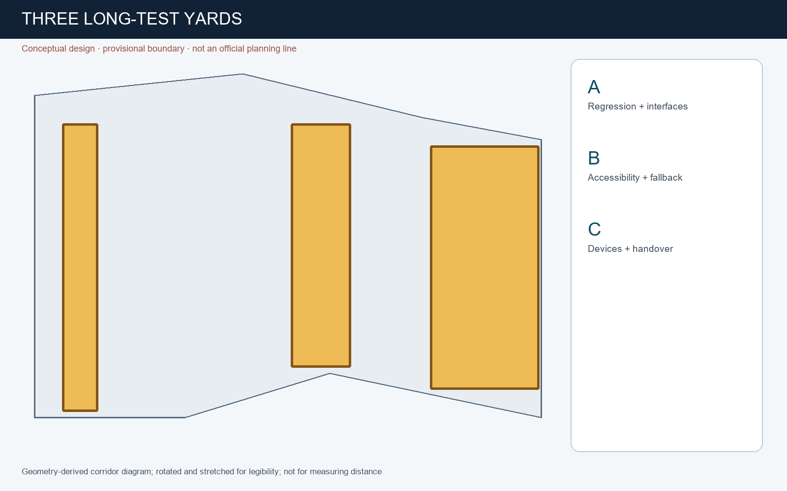
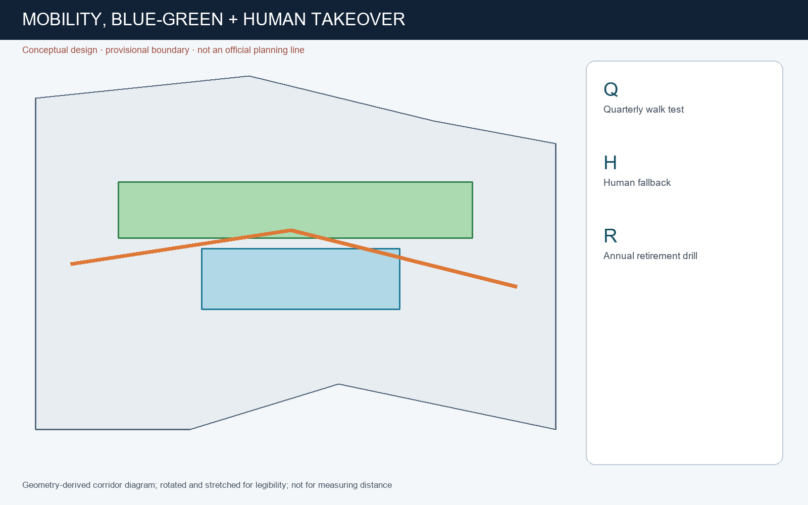
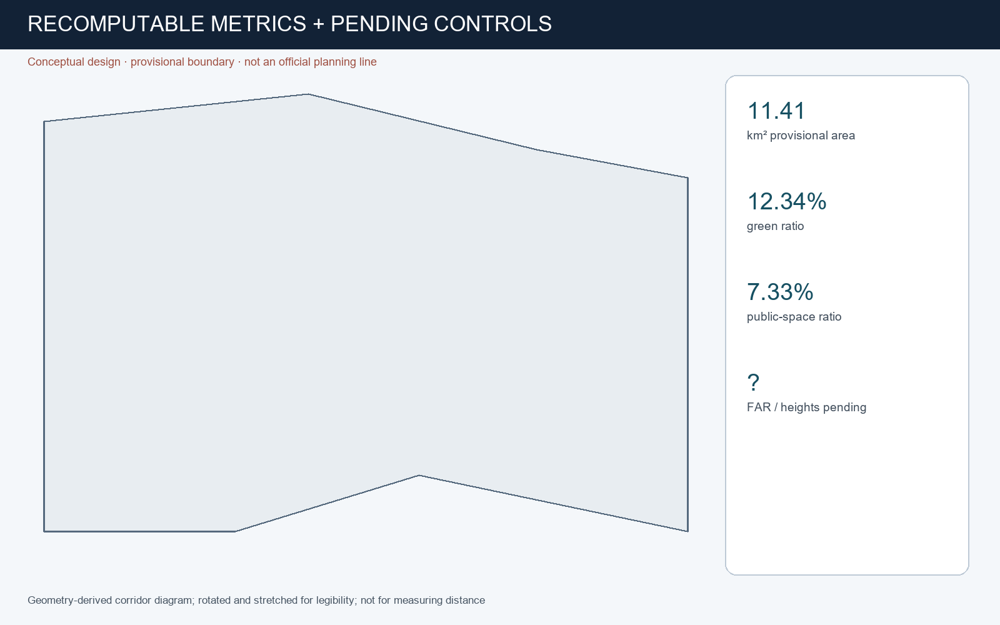

JING-ZHANG LONG TEST LINE: Urban AI That Can Still Be Maintained in Ten Years
A conceptual public infrastructure for long-duration testing, human takeover, maintenance and retirement of urban AI.
JING-ZHANG LONG TEST LINE
Design Basis and Source List
The package uses only the cleared repository brief, source registry, local standards snapshots, and explicitly provisional geometry. It does not claim an official planning boundary. The design proposition is a public long-duration testing and maintenance infrastructure for urban AI Source Source Depth.

Three-Level Scope Framework
The Coordinated Research Area frames ecosystem policy; the Overall Design Area organizes renewal and the public-space network; the three Key-Area Detailed Design Areas test spatial and operational detail. Geometry remains provisional and must be recalculated when official polygons arrive Spatial data Metric Depth.

Coordinated Research Area: Industry and Future City Research
The Long Test Line connects research calibration, community durability testing, market repair and professional services. Its double-track identity pairs continuous human service with periodically reviewed algorithms. Helsinki and Amsterdam inform public registers; Singapore AI Verify and NIST AI RMF inform testing and lifecycle review, without being treated as Chinese statutory standards Source Source Standard.
Overall Design Area: Urban Renewal and Regulatory-Plan-Level Urban Design
The proposal treats the heritage-park corridor as the public long-test main line. Land use, buildings, roads, green space, public space and phasing remain auditable design layers. FAR, height, ownership, utilities and engineering feasibility remain pending official data Spatial data Spatial data Depth.
Detailed Design of Key Areas
Zhongzhiyuan becomes the Calibration Yard for regression and interface tests; Beijing AI Origin Community becomes the Human Takeover Station for public-service and accessibility endurance tests; Dazhongsi becomes the Repair and Changeover Yard for devices and market services. All are conceptual recommendations within provisional key-area geometry Spatial data Metric Depth.

AI Innovation Ecosystem, Personas, and AI+ Scenarios
Twelve scenario cards cover accessibility navigation, tree care, night safety, public-service Q&A, privacy-preserving footfall, model regression, multilingual heritage interpretation, repairs, enterprise matching, event evacuation, energy alerts and an annual service-retirement drill. Five personas include residents and older people, disabled people and carers, developers, public operators, and researchers. Every service has an owner, review date, human fallback and exit method Spatial data Metric Depth.
Land Use, Building Scale, and Retain-Renovate-Demolish Strategy
The geometry supplies a complete conceptual land-use partition and design building footprints. It does not make parcel-level demolition findings. Retain, renovate, demolish or build decisions require ownership, condition, heritage and regulatory evidence that is not present Standard Spatial data Metric.
Transport, Rail, Municipal Infrastructure, and Public Services
Walking, cycling and transit interfaces carry the long-test route. Every digital service must have a non-digital fallback. Road redlines, pipelines, drainage, fire safety, energy capacity and station engineering remain professional follow-up items Spatial data Depth.

Blue-Green Network, Public Space, and Urban Character
The heritage corridor is a public maintenance timeline rather than a decorative technology showcase. Three landmarks—the Calibration Tower, Human Takeover Station and Repair Yard—display contribution, failure reviews and retirement records. Provisional geometry supports discussion only Spatial data Metric Depth.
Renewal Projects, Implementation Policy, and Phasing
Early actions are reversible lifecycle cards, manual-fallback signs and an annual retirement drill. Medium-term work adds testing rooms and repair interfaces. Long-term construction waits for official planning, ownership, utilities and engineering confirmation Spatial data Depth.
Metrics, Area Recalculation, and Compliance Matrix
Known values are recomputed from the submitted design geometry. Provisional area values are not official controls. Unknown FAR and statutory indicators remain pending rather than being fabricated Metric Metric Metric Depth.

Risk, Copyright, and Compliance
Primary risks are false certainty, surveillance, inaccessible upgrades, vendor lock-in, maintenance debt and failed handover. Controls are data minimisation, visible lifecycle cards, human takeover, versioned evidence, procurement handover duties and retirement drills. Generated visuals are conceptual and not observations of current conditions Source Standard Depth.
References
The complete audit layer is in sources.json, assumptions.json, metrics.json, GeoJSON and the three matrices. External cases are factual precedents with jurisdictional limitations, not planning authority for this site Source Source.